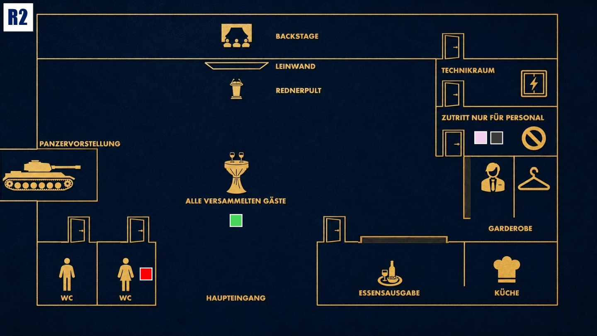

Druck aufbauen
Das Spiel wird intensiver. Nutze neue Informationen klug und bringe andere in Erklärungsnot.

Das Ziel der zweiten Runde
Finde heraus, wer weiß, dass Jake gezielt zu Stahlmann & Faust gebracht wurde und warum. Beobachte besonders Michael und Enisa und versuche gleichzeitig zu verhindern, dass deine eigene Rolle in Dianas Plan auffliegt.
Deine Ausgangslage
Diana hat dich wegen deines beruflichen Fehlers in der Hand. Du musst weiter vorsichtig bleiben und darfst nicht zeigen, wie abhängig du von ihr bist.
Kurz vor seinem Tod stellte Cole dir Fragen zu Jakes Einstellung bei Stahlmann & Faust. Offenbar wusste er mehr über diese Entscheidung, als er hätte wissen dürfen.
Beobachte besonders Michael und Enisa. Michael interessiert sich auffällig für interne Abläufe und Jake, Enisa könnte unter ähnlichem Druck stehen wie du.
Deine Geheimnisse
1. Die aktive Erpressung: Diana hat dir gedroht, dich zu ruinieren, wenn du dich nicht nach ihren Anweisungen verhältst. Du bist keine Täterin, aber du bist tief in Dianas Plan verstrickt.
2. Coles Vorahnung: Kurz vor dem Mord stellte Cole dir Fragen zu Jakes Einstellung bei Stahlmann & Faust. Das zeigt dir, dass er offenbar interne Informationen gesehen hatte. Er wusste zu viel.
Deine Mission
1. Verdacht auf Michael lenken: Stelle infrage, warum Michael Silber sich so auffällig für Stahlmann & Faust interessiert. Warum beobachtet ein externer Unternehmer interne Abläufe, Personalentscheidungen und Machtverhältnisse so genau?
2. Enisa testen: Finde vorsichtig heraus, ob Enisa ebenfalls unter Druck steht oder bei Jake eine größere Rolle spielt, als sie offen zugibt.
Deine Erinnerung an 19:00 Uhr

Zum Vergrößern tippen
Du triffst dich heimlich mit Jake im Raum „Nur für Mitarbeiter“, während Zoe auf der Toilette ist. Diana übernimmt in dieser Zeit die Begrüßung der Gäste.
Mögliche Fragen
An Michael: „Cole und du schienen heute Abend ein intensives Gespräch geführt zu haben. Worum ging es dabei wirklich?“
An Enisa: „Was hat dich dazu bewegt, Jake den Job bei Stahlmann & Faust ans Herz zu legen?“